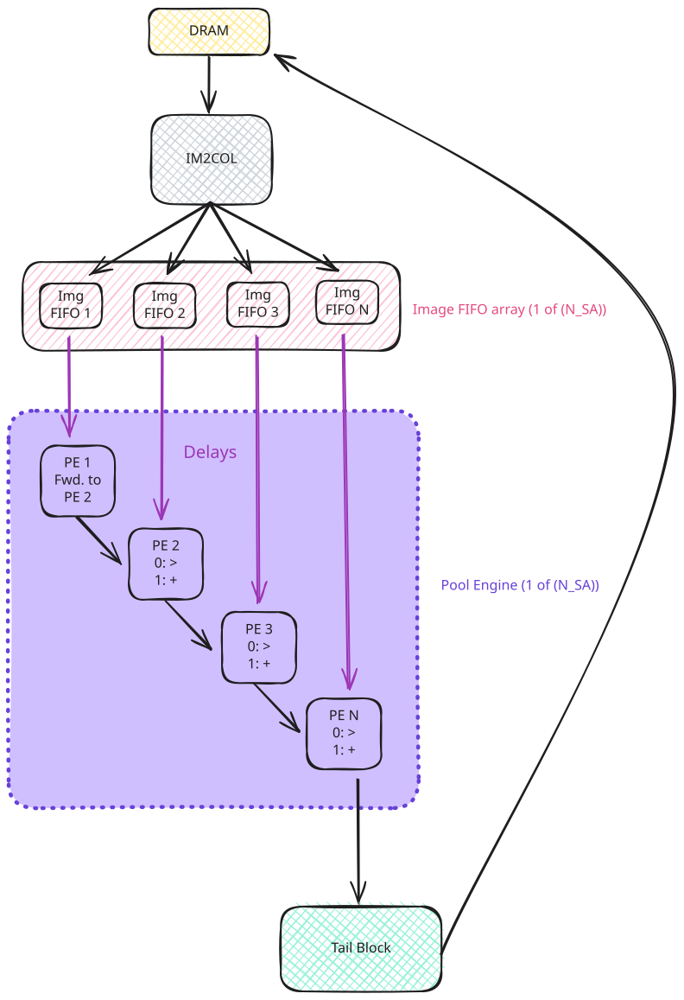

Mega Pool¶
Pooling Overview¶
Pooling is a dimensionality reduction technique used in deep learning to reduce the spatial size of feature maps while retaining the most relevant information. By summarising local regions of data, pooling reduces computational load and improves processing efficiency.
Pooling also plays a crucial role in improving generalization. By condensing information within local windows, it discourages the model from learning noise or exact positional details, thereby reducing overfitting and helping the network focus on dominant patterns.
Pooling is applied by dividing the input data into small spatial windows and using a reduction operation on each window. In max pooling, the largest value within the window is selected, whereas in average pooling, all values within the window are accumulated and averaged. This operation transforms a larger input feature map into a smaller output representation while preserving key characteristics.
Mega Pool Architectural Context¶
Earlier pooling architectures did not support different kernel and stride sizes. When the kernel size and stride differed, the same input data needed to be reused across multiple pooling windows, but the older pooling network did not preserve this data.
As a solution, intermediate data is written back to DRAM and re-fetched in this new architecture. Also, to support larger pooling kernels, it decomposes large windows into smaller sub-windows that can be processed incrementally. As a result, when operating as a Mega Pool block, this pooling engine supports different kernel and stride configurations, as well as large kernel sizes such as 5×5 and 7×7.
The Mega Pool engine operates in a streaming manner, processing data row by row using Processing Elements.
The design draws inspiration from systolic arrays used in convolution, but is specialised for pooling operations. Unlike convolution, the Mega Pool architecture does not involve weights and instead focuses on comparison or accumulation logic within the Processing Elements.
Data Flow and Architecture¶

Input Data: Data is fetched from DRAM, and it goes to IM2COL. Input data is fed into the image FIFO array from IM2COL, where it is staged for processing. Image FIFOs are shared between SA and Pool. IM2COL handles the repeating data for different kernels and strides. For more understanding, read IM2COL.
Pooling Operation: Data from image FIFOs is sliced for all the Pool PE arrays. Pool PE arrays contain PEs that compare/add based on the Pool Type. Pool type 0 is for max pool, and 1 is for avg. pool.
For max pool, the first image FIFO’s data goes into the first PE, which is forwarded to the PE below it as is. It will be compared with the data coming from the 2nd image FIFO. Larger data by comparison goes into the adjacent bottom PEs, and smaller values are discarded.
For avg. pool, addition is done in the pooling engine, and division is taken care of in later stages. (Division in Avg. pool is pending)
Output Data Generation: The results of the pooling operation are forwarded zero padder for quantised data in tailblock.
Through zero padders and a DRAM data aligner, it goes back to DRAM.